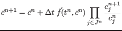
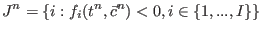
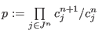
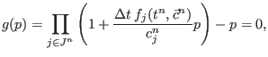
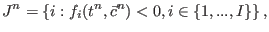
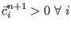
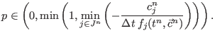

Next: Matrix solver Up: General ODE solver Previous: Second-order Extended Modified Patankar Contents
INTERFACE:
subroutine findp_bisection(numc, cc, derivative, dt, accuracy, pi)DESCRIPTION:
Auxiliary subroutine for finding the Extended Modified Patankar product term with the bisection technique.
This subroutine solves the non-linear problem
|  | |||
| with  | (261) | ||
using the fact that it can be reduced to the problem of finding the root of a polynomial in one unknown :
|  | (262) |
with
|  | (263) |
Additionally, it makes use of the the positivity requirement , which imposes restriction
|  | (264) |
It has been proved that there exists exactly one for which the above is true, see Bruggeman et al. (2006). The resulting problem is solved using the bisection scheme, which is guaranteed to converge.
USES:
implicit noneINPUT PARAMETERS:
integer, intent(in) :: numc REALTYPE, intent(in) :: cc(1:numc), derivative(1:numc) REALTYPE, intent(in) :: dt, accuracy !OUTPUT PARAMETER: REALTYPE, intent(out) :: piREVISION HISTORY:
Original author(s): Jorn BruggemanLOCAL VARIABLES:
REALTYPE :: pileft, piright, fnow REALTYPE :: relderivative(1:numc) integer :: iter, i, potnegcount